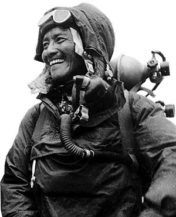

The history of mountaineering is a rich tapestry woven with tales of exploration, adventure, and human endeavor. While climbing mountains has likely been practiced for thousands of years by indigenous peoples around the world, modern mountaineering as we know it began to take shape in the 18th and 19th centuries in Europe.

The golden age of mountaineering dawned in the 19th century with the advent of alpinism—the pursuit of climbing peaks in the Alps. Visionaries like Edward Whymper, who famously conquered the Matterhorn in 1865, captured the imagination of the public with their daring exploits. The era saw a flurry of first ascents of major peaks in the Alps, as climbers pushed the boundaries of what was thought possible.
The 20th century brought further advancements in mountaineering, with climbers turning their sights to the world's highest peaks. The conquest of Everest in 1953 by Sir Edmund Hillary and Tenzing Norgay marked a watershed moment in mountaineering history, symbolizing the triumph of human perseverance and spirit in the face of seemingly insurmountable odds.
Since then, mountaineering has evolved into a global pursuit, with climbers tackling peaks on every continent. From the towering summits of the Himalayas to the icy expanses of Antarctica, mountaineers continue to push the limits of their capabilities, driven by a passion for adventure and exploration. Today, mountaineering remains as much a test of physical endurance and technical skill as it is a celebration of the human spirit and the unyielding desire to reach new heights.